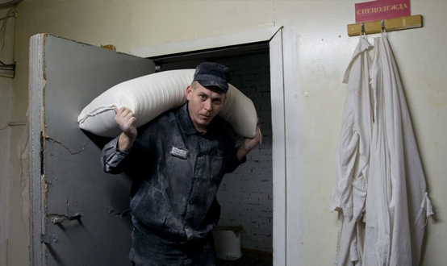

Преступления против безопасности движения и эксплуатации транспорта (транспортные преступления) предусмотрены статьями 263–271.1. УК РФ (глава 27).
Видовым объектом этой группы преступлений являются общественные отношения, складывающиеся в процессе обеспечения безопасности дорожного движения и эксплуатации транспорта, безопасности жизни и здоровья людей, сохранности материальных ценностей. При этом уголовный закон выделяет следующие виды транспорта: морской, речной, воздушный, железнодорожный, автомобильный. В большинстве составов преступлений имеются дополнительные объекты — жизнь, здоровье личности, собственность.
Объективная сторона составов данных преступлений сконструирована как по типу материальных, так и по типу формальных. Деяние представляет собой, как правило, активные действия, но возможно и в форме бездействия (например, выпуск в эксплуатацию технически неисправных транспортных средств).
Субъективная сторона составов данных преступлений характеризуется как неосторожной формой вины, так и прямым умыслом (ст. 265, 270 и 271 УК РФ).
Субъектом преступления признается участник движения и эксплуатации транспорта, т.е. специальный субъект.
С учетом непосредственных объектов выделяют две группы транспортных преступлений - преступления, связанные с управлением и эксплуатацией транспорта, и преступления, не связанные непосредственно с нарушением правил движения и эксплуатации транспортных средств.
Преступления, связанные с управлением и эксплуатацией транспорта
1) Ст. 263 — нарушение правил управления и эксплуатации железнодорожного, воздушного, водного транспорта. Деяние заключается в нарушении правил безопасности движения (превышение скорости движения, проезд поезда на запрещающий сигнал светофора, неправильное маневрирование капитаном судна при встрече с другими судами, игнорирование сигналов бакена или маяка, нарушение маршрута полета самолета и т.д. Деяние может выступить и в нарушении правил эксплуатации (выпуск на линию транспортного средства с неисправными тормозами, сигнальной системой, несоблюдение правил безопасности при посадке пассажиров и т.д.). Преступные последствия выступают в виде причинения тяжкого или средней тяжести вреда здоровью или крупного ущерба (разрушение транспортного средства, уничтожение перевозимого имущества). Крупным ущербом признается ущерб, сумма которого превышает один миллион рублей. Субъективная сторона характеризуется неосторожной формой вины в виде легкомыслия или небрежности. Виновный, нарушая правила безопасности движения или эксплуатации транспортного средства, предвидит возможность причинения вреда здоровью или крупного ущерба, но без достаточных к тому оснований самонадеянно рассчитывает на их предотвращение либо не предвидит возможности их наступления, хотя при необходимой внимательности и предусмотрительности должен был и мог предвидеть эти последствия. Субъект преступления — специальный — машинист, капитан, пилот, диспетчер и т.д.
2) Ст. 264 — нарушение правил дорожного движения. Непосредственным объектом преступления являются общественные отношения, складывающиеся по поводу обеспечения безопасности движения и эксплуатации транспортных средств. К ним относятся автомобили, трамваи, троллейбусы, трактора и иные самоходные машины, мотоциклы и иные механические транспортные средства. Объективная сторона характеризуется нарушением правил дорожного движения или эксплуатации транспортных средств, причинением тяжкого или средней тяжести вреда здоровью человека и причинной связью между ними. Субъективная сторона рассматриваемого преступления предполагает неосторожную форму вины в виде легкомыслия или небрежности. Субъектом преступления признается лицо, управляющее транспортным средством, достигшее 16 лет.
3) Ст. 264.1. — управление транспортным средством в состоянии опьянения лицом, подвергнутым административному наказанию или имеющим судимость.
4) Ст. 264.2. — нарушение правил дорожного движения лицом, подвергнутым административному наказанию и лишенным права управления транспортными средствами.
5) Ст. 264.3. — управление транспортным средством лицом, лишенным права управления транспортными средствами и подвергнутым административному наказанию или имеющим судимость.
6) Ст. 266 — недоброкачественный ремонт транспортных средств и выпуск их в эксплуатацию с техническими неисправностями.
7) Ст. 271 — нарушение правил международных полетов (несоблюдение маршрутов, мест посадки, воздушных ворот, высоты полета и т.п.).
8) Ст. 271.1. — нарушение правил использования воздушного пространства РФ (если деяние повлекло по неосторожности причинение тяжкого вреда здоровью или смерть человека).
Преступления, не связанные непосредственно с нарушением правил движения и эксплуатации транспортных средств
1) Ст. 263.1. — нарушение требований в области транспортной безопасности (если деяние повлекло по неосторожности причинение тяжкого вреда здоровью человека либо причинение крупного ущерба).
2) Ст. 267 — приведение в негодность транспортных средств или путей сообщения. В качестве предмета преступления выступают транспортные средства всех видов транспорта, пути сообщения, средства сигнализации или связи, транспортные коммуникации. Деяние может быть представлено в следующих формах: разрушение (приведение в полную негодность, исключающее возможность использовать по прямому назначению), повреждение или приведение иным способом в негодное для эксплуатации состояние транспортного средства и иных предметов, указанных выше. Деяние может быть в форме блокирования транспортных коммуникаций (перекрытие железнодорожных путей, взлетно-посадочных полос, преграждение автомобильных дорог и т.д.). В качестве преступных последствий закон называет причинение по неосторожности тяжкого или средней тяжести вреда здоровью человека либо причинение крупного ущерба (эти признаки уже рассмотрены в предыдущих составах). Субъективная сторона преступления характеризуется неосторожной формой вины. Субъект преступления общий — физическое лицо, достигшее 14 лет, вменяемое.
3) Ст. 267.1. — действия, угрожающие безопасной эксплуатации транспортных средств (из хулиганских побуждений).
4) Ст. 268 — нарушение правил, обеспечивающих безопасную работу транспорта. Данная уголовно-правовая норма предусматривает уголовную ответственность для всех иных участников движения — пешеходов, пассажиров, кроме лиц, указанных в ст. 263, 264 УК РФ. Субъективную сторону преступления характеризует неосторожная вина в виде легкомыслия или небрежности. Субъект преступления — любой участник движения, за исключением лиц, указанных в ст. 263 и 264 УK РФ.
5) Ст. 270 — неоказание капитаном судна помощи терпящим бедствие (если эта помощь могла быть оказана без серьезной опасности для своего судна, его экипажа и пассажиров).